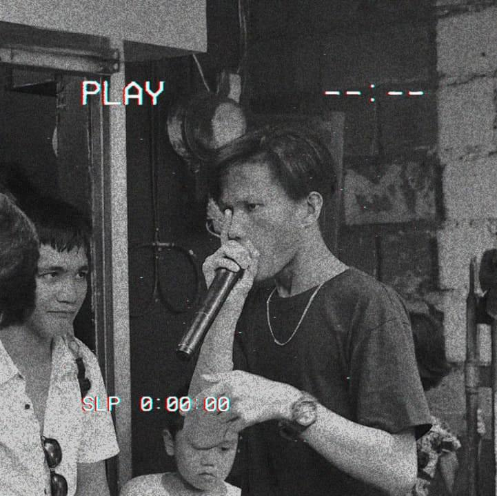
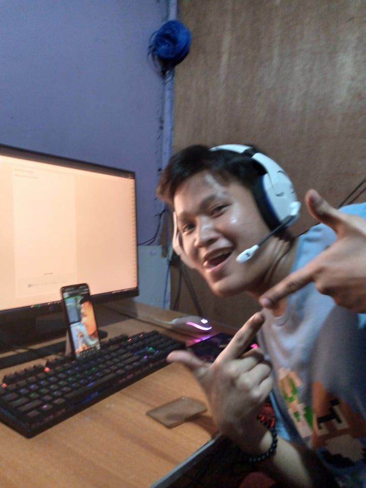

Beatboxing:
Beatboxing has been my remedy for boredom since I was nine years old. It uplifts my mood and serves as a creative outlet. I even joined a beatbox battle in Pasig, which further fueled my passion. The rhythmic patterns and vocal percussions bring me joy and create a positive atmosphere, making beatboxing an integral part of my life.
Coding:
Programming has ignited a deep passion within me. From the moment I wrote my first line of code, I was hooked. The thrill of turning abstract ideas into functional software is a sensation unlike any other. Whether it's solving complex problems, building innovative applications, or creating elegant algorithms, programming constantly challenges and excites me. It's a world where creativity meets logic, and I find immense joy in exploring its limitless possibilities. Programming has become more than just a skill; it has become my true passion and a driving force in my life.
Travelling:
Traveling is not just a hobby for me; it's a profound passion that fuels my soul. The thrill of exploring new cultures, immersing myself in unfamiliar landscapes, and connecting with people from diverse backgrounds is an exhilarating experience. Each journey unlocks a world of discovery, broadening my perspective and deepening my understanding of the world. From bustling cities to serene natural wonders, every destination holds its own charm and stories waiting to be unraveled. Traveling is an essential part of who I am, igniting a sense of adventure and a constant yearning to explore the unknown. It is through travel that I find my greatest joy and inspiration.